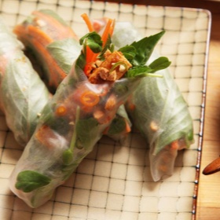

← All recipes
Tofu Spring Rolls

Servings: 4 servings · Prep: 5 mins · Cook: 20 mins
Ingredients
- 1 (14-ounce; 400 g) block firm (non-silken) tofu, cut into matchsticks approximately 2 inches long and 1/2 inch square
- 3 tablespoons (45ml) vegetable oil
- 1 recipe peanut-tamarind dipping sauce
- 1 large carrot, peeled and cut into a fine julienne
- 4 ounces pea greens
- 2 cups mixed picked fresh herbs, such as cilantro, mint, and Thai basil
- Chopped toasted peanuts
- Finely sliced Thai bird or serrano chile peppers
- 20 dried spring roll rice paper wrappers
Directions
- Place tofu in a large colander and set in the sink. Pour 1 quart boiling water over tofu and let rest for 1 minute. Transfer to a paper towel–lined tray and press dry. Heat vegetable oil in a large nonstick or cast iron skillet over medium-low heat until shimmering. Add tofu and cook, turning occasionally, until golden brown and crisp on all surfaces, about 10 minutes total. Transfer to a paper towel–lined plate to drain.
- Transfer drained tofu to a large bowl and add 5 tablespoons peanut-tamarind sauce. Toss to coat tofu.
- Transfer tofu, carrots, greens, herbs, peanuts, peppers, and remaining dipping sauce to serving platters. Serve with rice paper wrappers and a bowl of warm water. To eat, dip a rice paper wrapper in warm water until moist on all surfaces, then transfer to your plate. Place a small amount of desired fillings in the center. Roll the front edge of the wrapper over the filling away from you, then fold the right side over toward the center. Continue rolling until a tight roll with one open end has formed. Dip spring roll in dipping sauce as you eat.
Original source: seriouseats.com